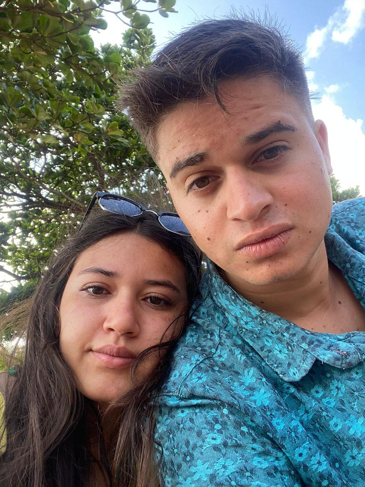
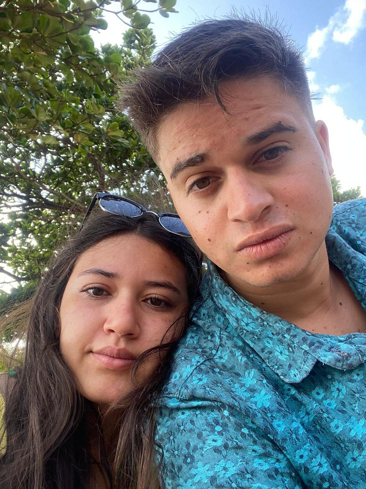
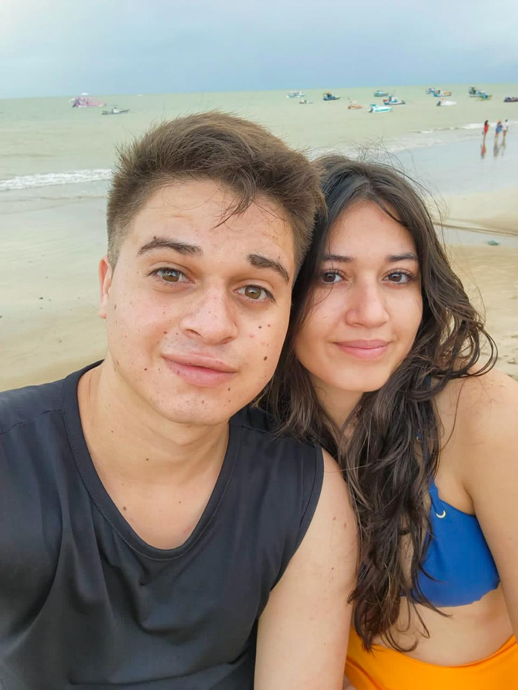
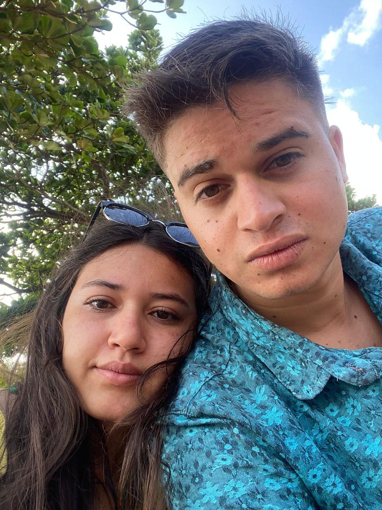
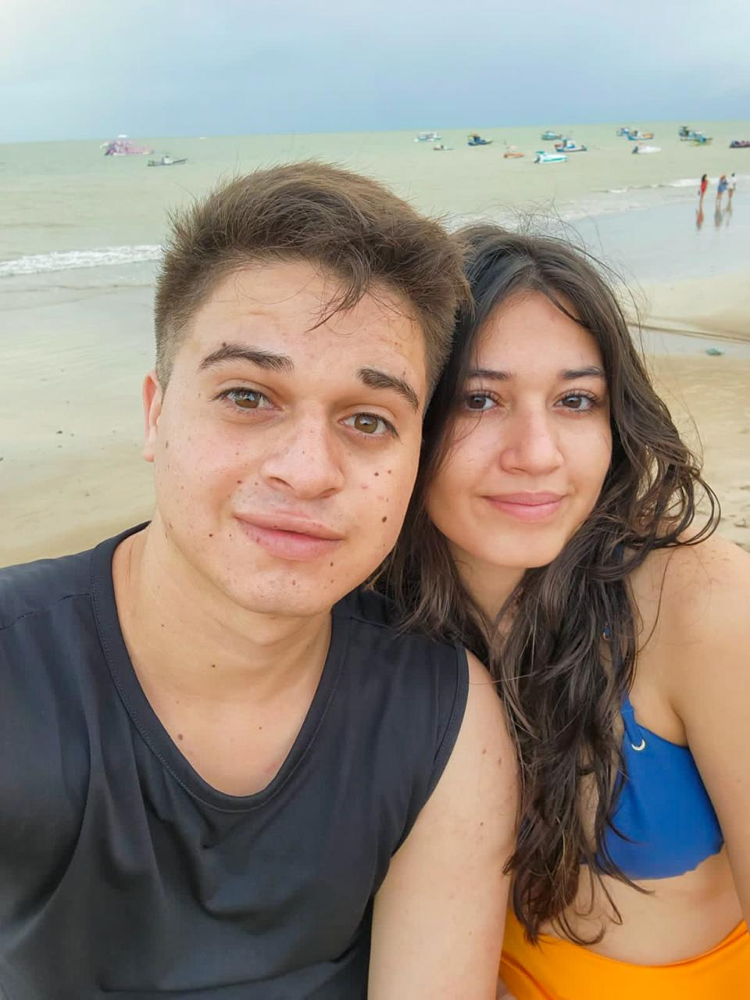
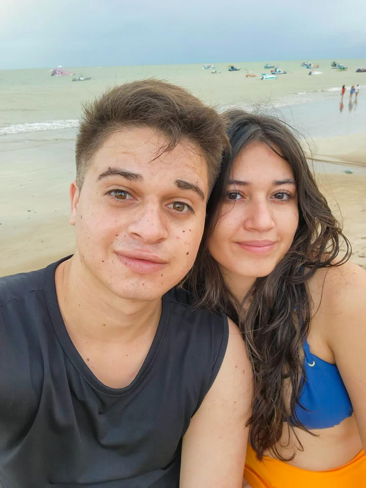
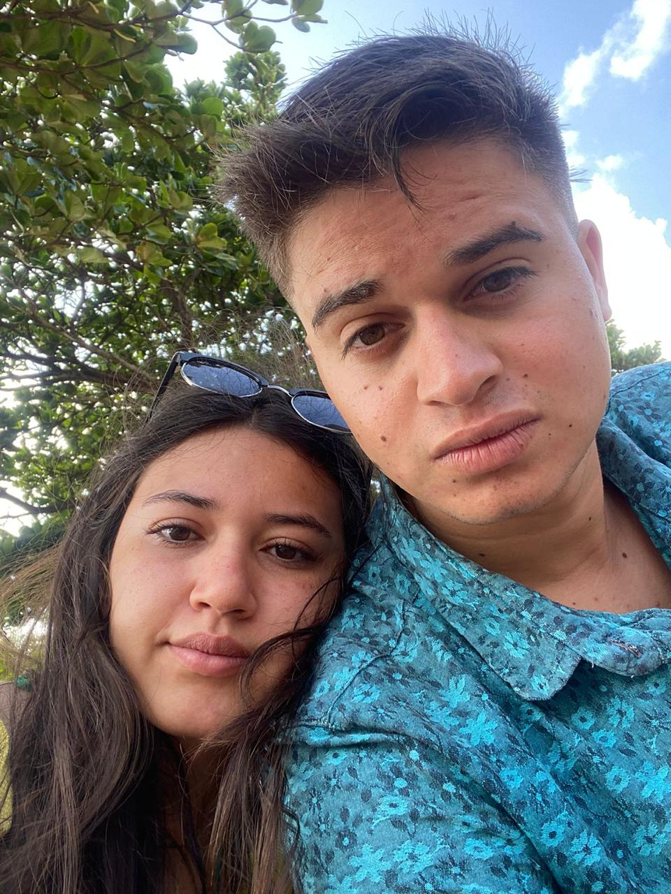
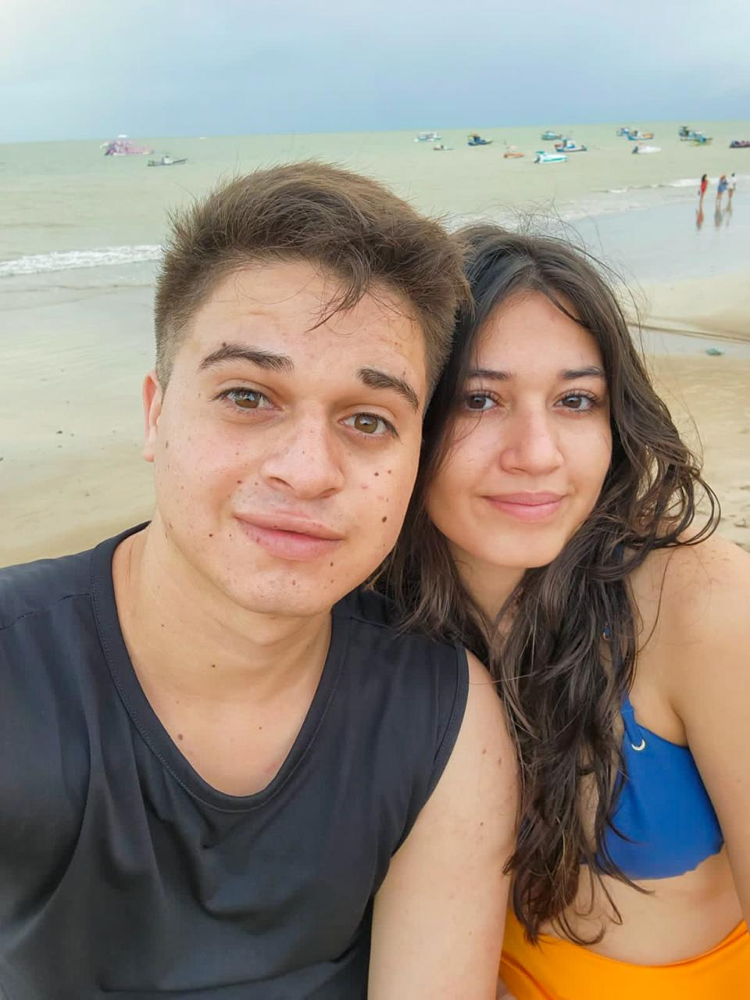

 





QUATRO ANOS do nosso amor!!! Meu amor, a iarinha de 2021 nunca imaginaria tudo isso, encontrar uma pessoa que ela ama tanto, ao ponto de querer passar o resto da vida com ela! Desde então, você mudou tudo, da melhor forma possível, tu não tem noção do quanto! Não sei se você entende, mas conviver contigo me fez ser alguém melhor, mais acolhedora, menos egoísta, mais "família" e outro, que na verdade seria um sonho: ser paciente com os outros igual a você (você pode até não achar que é, mas pergunte a qualquer um a resposta e vão dizer a msm coisa)
Quatro anos parecem pouca coisa,pelo menos parar mim passou mt rápido, mas se você parar pra pensar, saímos dos 16 para os 20 anos e isso é praticamente crescer juntos. Vivemos a fase mais turbulenta dos jovens (inda estamos vivendolkkkk), e ficamos juntos, nós dois conhecemos cada centímetro do outro, acredito que até os pensamentos a gente consiga adivinharkkk.
Isso só nos mostra o quanto o nosso amor é forte, que a nossa conexão vai além de qualquer coisa, me perdoa se algum dia eu não demonstrei isso.
Olhando para as datas da pagina anterior, eu tive tantas lembranças da gentee... Do nosso iniciozinho, o frio na barriga de te esperar você chegar, a ansiedade de te beijar pela primeira vez, da nossa primeira saída, de cheirar o sofá quando tu ia emboraKKK(tinha o seu cheirinho) , de passar horas pensando nos nossos beijos. Nesse tempo, a gente nunca iria imaginar que hoje em dia podemos ficar juntinhos sempre que dá, em campina e em joão pessoa(estamos realizando nossos sonhos e nem percebemos).
E mesmo depois de 4 anos, a distância, mesmo que menor, ainda está presente por aqui, a dor de ir voltar para a rotina nunca muda. Mas independente disso, o nosso amor só cresceu.
Não vejo a hora de casar com você e praticar a escala 7x0 (7 dias te vendo e 0 sem se ver)!!!
Eu te amo mais do que tudo, joão kaic. Você é o amor da minha vida.
gatinho lindo
💕
A gente, para sempre.